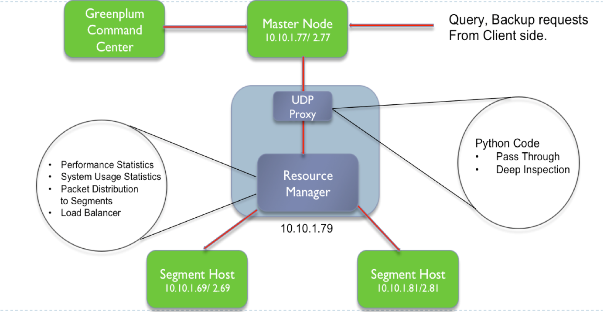
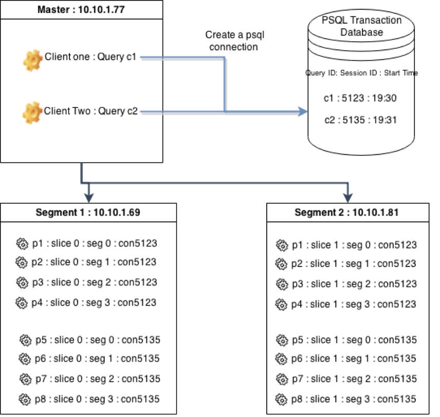

What is GreenPlum Database?
Quoting from their website :
"Greenplum Database® is an advanced, fully featured, open source data warehouse. It provides powerful and rapid analytics on petabyte scale data volumes. Uniquely geared toward big data analytics, Greenplum Database is powered by the world’s most advanced cost-based query optimizer delivering high analytical query performance on large data volumes."
One point to note is that when we worked on this project the software was proprietary.
In Greenplum architecture, data is partitioned across multiple segment servers, and each segment owns and manages a distinct portion of overall data.
There is no disk level sharing or data contention among segments.
Problem Statement
We intended to find QoS of Greenplum Database, introduce a module of ours to the greenplum architecture, which helps improve the performance, by scheduling different types of queries and replication commands. The steps involved were to install the database, i.e. a multi-node install, learn and understand times taken for each type of query and write our algorithms to improve the efficiency and performance of the GPDB.
Initial approach

We wanted to inspect the packets being sent from master to the segments. Detect what type of query it is.
And depending on the current load in the queue of each segment, we intended to load balance or manage queue to make bigger queries take more slice of system resources.
As underlying communication protocol was UDP, we intercepted the packets by implementing an UDP proxy.
Soon realised that the protocol was pgsql, and was encoded. Hence it didn't make sense for us to go ahead and try to decode it to get queries.
Solution
As we can see from the below image, 
Each query is given a sessionId in the PSQL Transaction Database in the master node. For this query there are processes running in segment nodes (which contain the data) with pid containing the sessionId.
Therefore, we realised that by manipulating the resources to these processes we could improve performance of the database.
Hence we wrote modules which mapped queries to processes and prioritised the required processes using control groups and nicing.
Result : This implementation resulted in an 80% decrease in response time for high priority users. It also managed to achieve a 10% decrease in response time for lower priority users by intelligently scheduling lower priority queries in the distributed nodes. This project was adjudged the best out of 70 projects under “Technology Impact” in the Class of 2015.
Time comparision with and without our module.
We realised that installing GreenPlum database was not a straightforward task. Hence we wrote a whitepaper which guides a user on how to install GreenPlum Database.